Guía de Guus – Sanador de la Senda del Honor en Hero Wars Alliance
- Por: Alexandre Domingos. .
Guus es un sanador y héroe de apoyo de la Senda del Honor que protege a sus aliados con Plumas doradas. Sus habilidades restauran salud, aumentan la probabilidad de golpe crítico de sus aliados y pueden salvar a sus compañeros antes de que su salud caiga por debajo del 25 %.
Esta guía explica el papel de Guus, su valor en el meta actual, sus fortalezas, debilidades, talismanes, habilidades, aspectos, artefactos, glifos y mejores sinergias en Hero Wars Alliance.


📋 Guus – Índice
- ¿Quién es Guus en Hero Wars Alliance?
- Valoración general de Guus en el meta
- Ventajas y desventajas de Guus
- Comparación de estadísticas máximas con talismanes
- Reliquia legendaria de Guus – Estadísticas y desbloqueos
- Prioridad de mejora de habilidades
- El mejor aspecto para Guus
- Prioridad de mejora de artefactos
- Prioridad de mejora de glifos
- Guía de talismanes de Guus
- Sinergias de Guus
- Los mejores equipos para Guus
- Conclusión
¿Quién es Guus en Hero Wars Alliance?
Guus es un sanador y héroe de apoyo de la línea central que pertenece a la Senda del Honor. Utiliza Plumas doradas para restaurar salud, aumentar la probabilidad de golpe crítico de sus aliados y proteger a quienes están cerca de la derrota.
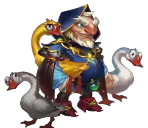
- Clase principal: Sanador
- Posición: Línea central
- Estadística principal: Fuerza
- Facción: Senda del Honor
- Cómo obtener piedras de alma: Eventos especiales y Cofre heroico
- Sinergia: Senda del Honor y equipos de golpes críticos, especialmente Artemis, Tristan, Galahad, Ishmael y Qing Mao
Bajo el ala ofrece curación para todo el equipo y apoyo a los golpes críticos, mientras que Escuadrón de plumas y Punta del pico ayudan a los aliados a sobrevivir a la presión constante y a situaciones peligrosas con poca salud.
Honkageddon convierte los golpes críticos de Guus en curación de área y Plumas doradas adicionales. También otorga a los héroes del Honor daño adicional según su salud actual, lo que hace que Guus sea especialmente valioso en equipos coordinados.
Ventajas y desventajas de Guus – Hero Wars Alliance
✅ Ventajas
- Potente curación para todo el equipo con Bajo el ala.
- Las Plumas doradas aumentan la probabilidad de golpe crítico de los aliados.
- Punta del pico puede salvar a los aliados antes de que su salud caiga por debajo del 25 %.
- Honkageddon beneficia a los equipos de golpes críticos y a los héroes del Honor.
- La mayoría de sus curaciones escalan bien con el ataque físico.
❌ Desventajas
- No tiene habilidades de control de masas.
- Antes del nivel 20 de la reliquia, sus golpes críticos curan en lugar de infligir daño adicional.
- Escuadrón de plumas solo afecta a los aliados situados delante de él.
- Punta del pico consume la Pluma dorada tras activarse.
- Necesita a los aliados adecuados para aprovechar Honkageddon al máximo.
Guus – Comparación de estadísticas máximas con talismanes
Los siguientes valores incluyen el talismán equipado y una reliquia de nivel 30: +290.824 de salud y +37.976 de ataque físico, añadidos a las estadísticas sin la reliquia.
| Estadística | 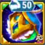 Talismán 1: Plumas |
|
|---|---|---|
 Inteligencia Inteligencia | 4.155 | 4.155 |
 Agilidad Agilidad | 3.729 | 3.729 |
 Fuerza Fuerza | 16.900 | 14.900 |
 Salud Salud | 1.435.665 | 1.355.665 |
 Ataque físico Ataque físico | 101.464 | 112.664 |
 Ataque mágico Ataque mágico | 27.571 | 27.571 |
 Armadura Armadura | 40.075,9 | 53.875,9 |
 Defensa mágica Defensa mágica | 25.328,8 | 25.328,8 |
 Tenacidad Tenacidad | 6.313 | 6.313 |
 Probabilidad de golpe crítico Probabilidad de golpe crítico | 24.100,4 | 16.510,4 |
Reliquia legendaria de Guus – Estadísticas y desbloqueos
Estos bonos son los totales acumulados en cada nivel de reliquia. Usa el bono de tu nivel actual; no sumes las filas entre sí.
| Nivel de reliquia | Bono total de salud | Bono total de ataque físico | Habilidad desbloqueada |
|---|---|---|---|
| 1 | +28.794 | +3.760 | Hermandad de plumas |
| 10 | +53.269 | +6.956 | Punta del pico |
| 20 | +146.854 | +19.176 | Honkageddon |
| 30 | +290.824 | +37.976 | Sin graznido no hay beneficio |
Guus – Prioridad de mejora de habilidades – Hero Wars Alliance
Los ejemplos numéricos siguientes utilizan la reliquia de nivel 30 y el talismán equipado. Los valores de curación se muestran antes de la curación crítica; en el nivel 10 de la reliquia, las curaciones críticas restauran el 200 % de la cantidad normal. La probabilidad depende de la probabilidad de golpe crítico de Guus.
Guus convierte las Plumas doradas en curación, apoyo a los golpes críticos y protección de emergencia. Este orden muestra qué habilidades básicas aportan más valor en combate.
Orden de mejora recomendado: Bajo el ala → Honkageddon → Punta del pico → Escuadrón de plumas → Ataque básico.
0 – Ataque básico
Descripción en el juego: Inflige daño físico a un solo objetivo.
Explicación de la habilidad: Este es el ataque normal de Guus contra un solo objetivo. Inflige 100 % de ataque físico, lo que equivale a 101.464 con el Talismán de las Plumas o 112.664 con el Talismán de la Gran Yema.
Fórmula con el talismán 1: Talismán de las Plumas
- Fórmula 1: Daño físico: 101.464 (100 % de ataque físico)
Fórmula con el talismán 2: Talismán de la Gran Yema
- Fórmula 1: Daño físico: 112.664 (100 % de ataque físico)
Información de la animación de la habilidad
- Tiempo de reutilización: 5 segundos
- Retraso de la animación: 1,25 segundos
- Tipo de daño: Daño físico
Prioridad de mejora: Baja – El ataque básico aporta daño constante, pero no mejora la duración de las Plumas doradas, la curación del equipo ni la protección de emergencia. Invierte primero en las cuatro habilidades de Guus.
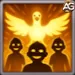
1 – Bajo el ala
Descripción en el juego: Restaura salud y otorga una Pluma dorada a cada aliado. Efecto pasivo: la Pluma dorada aumenta la probabilidad de golpe crítico de un aliado durante 8,0 segundos. Si el aliado recibe otra Pluma dorada, la duración de este efecto se amplía en 8,0 segundos.
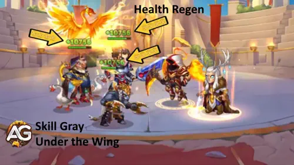
Explicación de la habilidad: Esta es la principal curación de Guus para todo el equipo y la forma más sencilla de dar Plumas doradas a todos. La salud restaurada se calcula con 150 % de ataque físico + 3600, con un resultado de 155.796 o 172.596 de salud. El bono de probabilidad de golpe crítico utiliza 5 % de ataque físico + 1200, lo que otorga 6.273,2 o 6.833,2 según el talismán equipado.
Fórmula con el talismán 1: Talismán de las Plumas
- Fórmula 1: Salud restaurada: 155.796 (150 % de ataque físico + 3600)
- Fórmula 2: Aumento de la probabilidad de golpe crítico: 6.273,2 (5 % de ataque físico + 1200)
Fórmula con el talismán 2: Talismán de la Gran Yema
- Fórmula 1: Salud restaurada: 172.596 (150 % de ataque físico + 3600)
- Fórmula 2: Aumento de la probabilidad de golpe crítico: 6.833,2 (5 % de ataque físico + 1200)
Información de la animación de la habilidad
- Palabras clave: Potenciación
- Retraso de la animación: 1,25 segundos
- Duración: 8 segundos
- Alcance: 3000
- Nota: El aumento de la probabilidad de golpe crítico depende de las estadísticas del héroe al inicio del combate y no cambia durante este.
Prioridad de mejora: Muy alta – Mejora esta habilidad al máximo primero. Ayuda de inmediato a los cinco aliados al combinar curación fiable, Plumas doradas para todo el equipo y el apoyo a los golpes críticos que activa el resto de las habilidades de Guus.
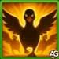
2 – Escuadrón de plumas
Descripción en el juego: Otorga una Pluma dorada a cada aliado situado delante de él. Mientras un aliado tenga una Pluma dorada, recupera salud cada vez que recibe daño de los enemigos.
Explicación de la habilidad: Escuadrón de plumas protege la primera línea de Guus durante 5 segundos. Cada golpe enemigo recibido en ese periodo activa una curación basada en 30 % de ataque físico + 1800, restaurando 32.239,2 o 35.599,2 de salud cada vez. Por tanto, los ataques enemigos frecuentes pueden convertir esta cantidad modesta en una potente curación repetida.
Fórmula con el talismán 1: Talismán de las Plumas
- Fórmula 1: Salud restaurada por golpe enemigo: 32.239,2 (30 % de ataque físico + 1800)
Fórmula con el talismán 2: Talismán de la Gran Yema
- Fórmula 1: Salud restaurada por golpe enemigo: 35.599,2 (30 % de ataque físico + 1800)
Información de la animación de la habilidad
- Tiempo de reutilización inicial: 6 segundos
- Tiempo de reutilización: 15 segundos
- Palabras clave: Potenciación
- Retraso de la animación: 1 segundo
- Duración: 5 segundos
- Alcance: 3000
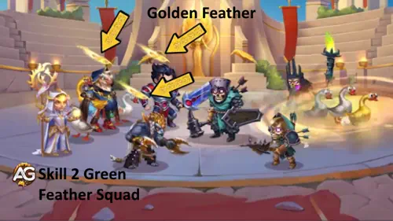
Prioridad de mejora: Media-alta – La curación repetida puede ser excelente contra ataques rápidos, pero la habilidad solo protege a los aliados delante de Guus y tiene un tiempo de reutilización de 15 segundos. Mejórala después de sus habilidades para todo el equipo y de emergencia.
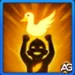
3 – Punta del pico
Descripción en el juego: Si la salud de un aliado con una Pluma dorada fuera a caer por debajo del 25 %, se restaura parcialmente antes de que eso ocurra. La cantidad de salud restaurada aumenta por cada segundo restante de duración de la Pluma dorada. La Pluma dorada desaparece tras activar este efecto.
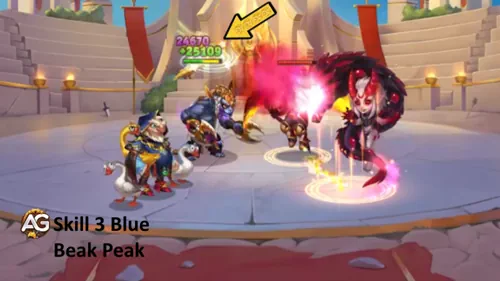
Explicación de la habilidad: Punta del pico funciona como un rescate de emergencia. La curación base es de 15 % de salud + 6000, equivalente a 221.349,75 o 209.349,75 de salud. Cada segundo restante de la Pluma dorada añade 10 % de ataque físico + 1200, es decir, 11.346,4 o 12.466,4 de curación adicional por segundo.
Fórmula con el talismán 1: Talismán de las Plumas
- Fórmula 1: Salud restaurada base: 221.349,75 (15 % de salud + 6000)
- Fórmula 2: Salud adicional por segundo restante: 11.346,4 (10 % de ataque físico + 1200)
Fórmula con el talismán 2: Talismán de la Gran Yema
- Fórmula 1: Salud restaurada base: 209.349,75 (15 % de salud + 6000)
- Fórmula 2: Salud adicional por segundo restante: 12.466,4 (10 % de ataque físico + 1200)
Información de la animación de la habilidad
- Palabras clave: Potenciación, curación de emergencia
- Umbral de salud: 25 %
- Alcance: 3000
- Nota: La Pluma dorada desaparece después de que se active la curación.
Prioridad de mejora: Alta – Esta habilidad puede evitar una eliminación repentina. Su utilidad es práctica e inmediata, aunque necesita una Pluma dorada activa y la consume después del rescate.
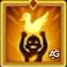
Punta del pico – Reliquia de nivel 10
Mejora legendaria
Las curaciones de las habilidades de Guus pueden ser críticas y restaurar más salud. La probabilidad de curación crítica depende de su probabilidad de golpe crítico.
Curación crítica: 200 % (el doble de la curación normal).
Mi opinión sobre la curación crítica: Más probabilidad de golpe crítico significa más oportunidades para que Guus aseste críticos y active la curación de Honkageddon. A partir del nivel 10 de la reliquia, este atributo también aumenta la probabilidad de curación crítica, que restaura el doble: una cura normal de 100.000 de Salud pasa a 200.000.
Por eso prefiero el Talismán 1 a partir del nivel 10 de la reliquia. Su mayor probabilidad de crítico favorece tanto las activaciones de curación como las curas críticas. En el nivel 20 gana aún más valor: Guus inflige daño crítico mientras cura a los aliados cercanos y les otorga Plumas Doradas.
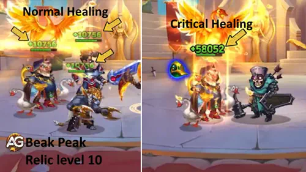
Desbloqueos en el nivel 10 de la reliquia
| Información | Valor |
|---|---|
| Fragmentos de reliquia necesarios (niveles 2–10) |

280
|
| Total de fragmentos de reliquia necesarios (niveles 0–10) |
330
|
| Bono total de ataque físico (niveles 0–10) |
+6.956
|
| Bono total de salud (niveles 0–10) |
+53.269
|
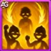
4 – Honkageddon
Descripción de la habilidad básica (antes de la mejora de nivel 20): Los golpes críticos del héroe no infligen daño adicional, sino que restauran la salud de todos los aliados cercanos al objetivo y les otorgan Plumas doradas. Si un aliado tiene una Pluma dorada, todos sus golpes críticos infligen más daño, y los héroes del Honor infligen daño adicional según su salud actual.
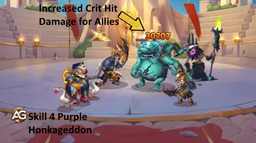
Explicación de la habilidad: Honkageddon convierte cada golpe crítico de Guus en curación de área y nuevas Plumas doradas. Tanto la curación como el aumento del daño crítico utilizan 80 % de ataque físico + 6000, con un resultado de 87.171,2 o 96.131,2. Los héroes del Honor también obtienen un 10 % de daño adicional según su salud actual.
Fórmula con el talismán 1: Talismán de las Plumas
- Fórmula 1: Salud restaurada al asestar un golpe crítico: 87.171,2 (80 % de ataque físico + 6000)
- Fórmula 2: Aumento del daño crítico de los aliados: 87.171,2 (80 % de ataque físico + 6000)
- Fórmula 3: Daño adicional de los héroes del Honor: 10 % según la salud actual
Fórmula con el talismán 2: Talismán de la Gran Yema
- Fórmula 1: Salud restaurada al asestar un golpe crítico: 96.131,2 (80 % de ataque físico + 6000)
- Fórmula 2: Aumento del daño crítico de los aliados: 96.131,2 (80 % de ataque físico + 6000)
- Fórmula 3: Daño adicional de los héroes del Honor: 10 % según la salud actual
Información de la animación de la habilidad
- Palabras clave: Potenciación
- Área: 255
- Alcance: 3000
- Activación: Guus asesta un golpe crítico
Prioridad de mejora: Muy alta – Esta habilidad pasiva conecta las estadísticas críticas de Guus, la curación, la distribución de Plumas doradas y la sinergia con el Honor. Mejórala al máximo junto con Bajo el ala cuando Guus forme parte de tu equipo principal de golpes críticos.
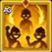
Honkageddon – Reliquia de nivel 20
Mejora legendaria
Ahora, cuando Guus inflige daño crítico, también restaura salud y otorga una Pluma dorada a los aliados cercanos.
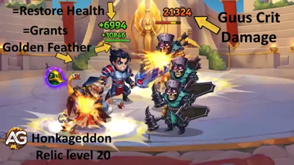
Desbloqueos en el nivel 20 de la reliquia
| Información | Valor |
|---|---|
| Fragmentos de reliquia necesarios (niveles 11–20) |
800
|
| Total de fragmentos de reliquia necesarios (niveles 0–20) |
1.130
|
| Bono total de ataque físico (niveles 0–20) |
+19.176
|
| Bono total de salud (niveles 0–20) |
+146.854
|
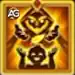
5 – Hermandad de plumas – Reliquia de nivel 1
Habilidad legendaria · Potenciación
Cada 11 segundos, otorga una Pluma dorada a sí mismo y al aliado con la estadística de salud más alta.
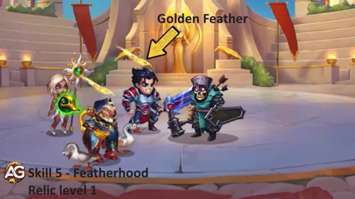
Prioridad de mejora: Alta – Se desbloquea en el nivel 1 de la reliquia y otorga una Pluma dorada a Guus y al aliado con la estadística de salud más alta cada 11 segundos.
Desbloqueos en el nivel 1 de la reliquia
| Información | Valor |
|---|---|
| Fragmentos de reliquia necesarios (niveles 0–1) |
50
|
| Total de fragmentos de reliquia necesarios (niveles 0–1) |
50
|
| Bono total de ataque físico (niveles 0–1) |
+3.760
|
| Bono total de salud (niveles 0–1) |
+28.794
|
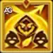
6 – Sin graznido no hay beneficio – Reliquia de nivel 30
Habilidad legendaria · Potenciación
Mientras Guus y sus aliados estén bajo el efecto de una Pluma dorada, reciben un 75 % menos de daño crítico mágico y puro.
Esta reducción se aplica al daño crítico mágico y puro mientras una Pluma dorada esté activa.
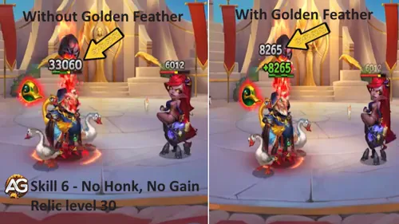
Prioridad de mejora: Situacional – Se desbloquea en el nivel 30 de la reliquia. Prioriza este hito al enfrentarte a daño crítico mágico y puro; su protección requiere una Pluma dorada activa.
Desbloqueos en el nivel 30 de la reliquia
| Información | Valor |
|---|---|
| Fragmentos de reliquia necesarios (niveles 21–30) |
1.750
|
| Total de fragmentos de reliquia necesarios (niveles 0–30) |
2.880
|
| Bono total de ataque físico (niveles 0–30) |
+37.976
|
| Bono total de salud (niveles 0–30) |
+290.824
|
▶️ Vídeo: ¿Cuánto ha cambiado Guus con su reliquia? ¿MERECE LA PENA EL NIVEL 30? | Hero Wars Alliance

El mejor aspecto para Guus en Hero Wars Alliance
Descubre el mejor orden de mejora de aspectos para Guus en Hero Wars Alliance y maximiza su potencial de curación y apoyo en combate.
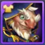
Aspecto predeterminado
Fuerza +1.365
Cada punto de fuerza otorga a Guus 40 de salud y aumenta su ataque físico, ya que la fuerza es su estadística principal. Esto potencia todas sus habilidades de curación y los efectos de las Plumas doradas.
Prioridad de mejora: Muy alta – Este es el aspecto que debes mejorar primero. Aumenta directamente el ataque físico y la salud de Guus, potenciando todas sus curaciones y efectos positivos.
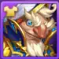
Aspecto angelical
Salud +108.285
Gracias a su enorme aumento de salud, este aspecto mejora mucho la resistencia de Guus en todos los combates. Más salud le permite soportar más daño y seguir apoyando al equipo.
Prioridad de mejora: Alta – Una mejora sólida después de los aspectos predeterminado y de la cosecha. Aunque no aumenta directamente su poder de curación, le ayuda a mantenerse activo durante más tiempo, especialmente contra equipos capaces de infligir mucho daño rápidamente.
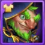
Aspecto elegante
Defensa mágica +10.650
Este aspecto ayuda a Guus a sobrevivir más tiempo contra enemigos con mucho daño mágico. Una mayor supervivencia le permite seguir curando y potenciando a sus aliados durante más tiempo.
Prioridad de mejora: Media – Útil contra equipos centrados en el daño mágico. El papel de Guus es mantener vivos a sus aliados, por lo que la defensa mágica adicional le ayuda a permanecer más tiempo en el campo de batalla.
Aspecto de caballero
Tenacidad +2.960
La tenacidad reduce el daño recibido cuando la salud de Guus es baja, sin importar el tipo de daño. Le ayuda a sobrevivir cuando está a punto de caer, pero solo se activa en momentos críticos.
Prioridad de mejora: Baja – Este es el aspecto menos urgente de mejorar. Aunque resulta útil en combates peligrosos, su efecto es situacional y tiene menos impacto general que mejorar la curación o la supervivencia habitual.
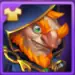
Aspecto misterioso
Armadura +10.650
Este aspecto aumenta notablemente la resistencia de Guus contra grandes cantidades de daño físico. La supervivencia adicional le permite permanecer más tiempo en el campo de batalla, curando y apoyando a sus aliados de forma continua.
Prioridad de mejora: Media-alta – Una buena opción secundaria. Como héroe de apoyo, Guus se beneficia mucho de la defensa adicional, especialmente frente a amenazas físicas que atacan la retaguardia.
Aspecto de la cosecha
Ataque físico +7.095
Este aspecto es muy valioso para Guus porque todas sus habilidades de curación y apoyo escalan con el ataque físico. Cuanto mayor sea su ataque, mejores serán sus curaciones y sus bonos críticos para los aliados.
Prioridad de mejora: Alta – Mejora este aspecto justo después del predeterminado. Influye directamente en la eficacia de la curación y el apoyo de Guus en todos los combates.
Aspecto crepuscular+
Probabilidad de golpe crítico +5.920
Los golpes críticos de Guus activan Honkageddon, curan a los aliados y otorgan Plumas doradas. En el nivel 20 de la reliquia, también inflige daño crítico mientras proporciona este apoyo. Este gran bono de probabilidad de golpe crítico hace que la curación se active de forma más fiable y ayuda a Guus a mantener las Plumas doradas durante el combate.
Prioridad de mejora: Muy alta – Una de las mejores mejoras JcJ de Guus. Los golpes críticos más constantes generan curaciones de área y Plumas doradas con mayor frecuencia, mejorando la resistencia del equipo y permitiendo el daño crítico adicional de los aliados con plumas. Priorízalo junto con sus principales aspectos de ataque físico.
Guus – Prioridad de mejora de artefactos en Hero Wars Alliance
¡Descubre qué artefactos priorizar para Guus y mejora la curación, la supervivencia y la sinergia crítica de todo el equipo en Hero Wars Alliance!
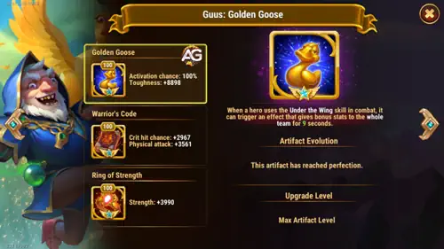
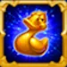
1.º – Arma: Ganso dorado
Este artefacto aumenta la tenacidad, reduciendo todos los tipos de daño recibido por el equipo durante 9 segundos cuando su salud es baja. Esta reducción es crucial: ayuda a mantener vivos a Guus, sanador de la línea central, y a sus aliados, permitiéndole curar y aplicar Plumas doradas de forma constante.
Prioridad de mejora: Alta – Mantener a Guus vivo durante más tiempo significa más curación y más bonos críticos para tu equipo. Por eso el arma es la máxima prioridad para la supervivencia y el apoyo al equipo.
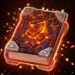
2.º – Libro: Código del guerrero
Este artefacto otorga probabilidad de golpe crítico y ataque físico. Estas estadísticas mejoran directamente la habilidad de Guus «Honkageddon», permitiendo que sus golpes críticos curen a los aliados cercanos y distribuyan Plumas doradas con mayor frecuencia.
Prioridad de mejora: Media – Aunque no sea su función principal, la curación crítica de Guus cobra más importancia en combates largos o con equipos centrados en golpes críticos. Mejora este artefacto en segundo lugar para aumentar la sinergia y la curación del equipo.

3.º – Anillo: Anillo de fuerza
Este artefacto aumenta la fuerza, lo que aumenta la salud y el ataque físico de Guus. Ambas estadísticas son útiles, pero tienen un efecto menos inmediato sobre sus curaciones que los otros artefactos.
Prioridad de mejora: Baja – Aunque mejora la supervivencia y las estadísticas básicas, no potencia directamente los mecanismos de curación de Guus ni la utilidad de sus golpes críticos. Mejóralo al final, después de conseguir un mayor impacto para el equipo con los demás artefactos.
Guus – Prioridad de mejora de glifos
Descubre el mejor orden de mejora de glifos para Guus en Hero Wars Alliance y aumenta la eficacia de su curación y apoyo en combate.
1.º – Ataque físico:
Este es el glifo más importante de Guus. Su curación y los efectos de las Plumas doradas escalan directamente con su ataque físico. Mejorarlo aumenta considerablemente su capacidad de apoyo.
Prioridad de mejora: Alta – Potencia directamente todas las habilidades de curación y los efectos positivos.
2.º – Salud:
La curación de Guus con Punta del pico se basa en un porcentaje de su propia salud máxima. Este glifo aumenta esa curación y mejora su resistencia en combates largos.
Prioridad de mejora: Media-alta – Aumenta la supervivencia y mejora la curación de la habilidad 3.
3.º – Probabilidad de golpe crítico:
Los golpes críticos de Guus activan efectos adicionales, como curación y distribución de Plumas doradas. Aunque son útiles, su rendimiento no depende por completo de ellos, por lo que esta es una prioridad secundaria.
Prioridad de mejora: Media – Aporta valor, pero no es esencial para sus funciones principales.
4.º – Armadura:
La armadura ayuda a Guus a resistir el daño físico, especialmente en primera línea. Sin embargo, como es principalmente un héroe de apoyo y suele estar en una posición segura, este glifo no es prioritario.
Prioridad de mejora: Baja – Defensivo, pero no crucial para su papel.
5.º – Fuerza:
Aunque la fuerza aumenta ligeramente la salud y el ataque físico, su escalado es mucho menos eficiente que mejorar directamente los glifos de ataque físico y salud.
Prioridad de mejora: Muy baja – Ofrece aumentos modestos frente a los glifos de mayor impacto.
Guía de talismanes de Guus – Hero Wars Alliance
Mi recomendación depende del nivel de la reliquia de Guus:
- Sin reliquia o en el nivel 1 — Talismán 2: el Ataque Físico refuerza las curas que dependen de él, y la Armadura ayuda a Guus a sobrevivir.
- Nivel 10 — Talismán 1: al desbloquear la curación crítica, prefiero más probabilidad de crítico para favorecer las curas críticas y las activaciones de Honkageddon.
- Nivel 20 en adelante — Talismán 1: los críticos también infligen daño, además de curar y otorgar Plumas Doradas.
- Guus tiene dos talismanes, y debes elegir cuál equipar para el combate. Los bonos de los aspectos se aplican todos, independientemente del aspecto activo. Los talismanes solo otorgan las estadísticas y efectos del que esté equipado. Elegir el talismán adecuado puede marcar una gran diferencia en combate.
- Las tres ranuras de renovación forman un único bono combinado. Lo más importante es el valor total de las tres renovaciones. Puedes renovar cada ranura para maximizar la probabilidad de golpe crítico, la armadura o el ataque físico según el talismán y tu estrategia.
Talismán de las Plumas
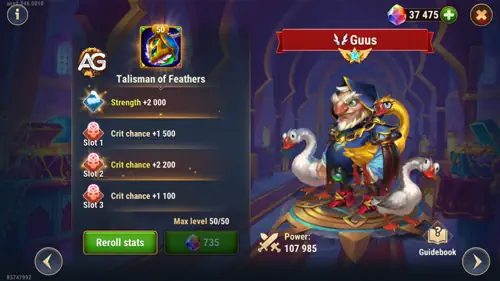
El Talismán 1 aporta Fuerza y probabilidad de golpe crítico. La Fuerza mejora la Salud y el Ataque Físico, mientras que la probabilidad de crítico favorece las activaciones de curación de Honkageddon y, desde el nivel 10 de la reliquia, la curación crítica. Es mi opción preferida desde el nivel 10 y gana aún más valor en el nivel 20.
|
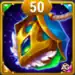 Talismán de las Plumas |
Estadística principal |
|---|---|
|
Fuerza |
+2000 |
| Ranura 1 | Ranura 2 | Ranura 3 | Bono total de renovación |
|---|---|---|---|
Probabilidad de golpe crítico +2200 |
Probabilidad de golpe crítico +2200 |
Probabilidad de golpe crítico +2200 |
Probabilidad de golpe crítico +6600 |
Talismán de la Gran Yema – VIP
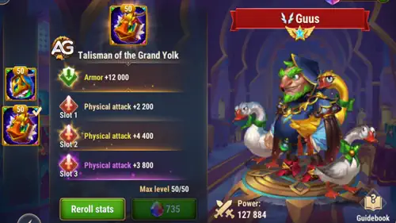
El Talismán 2 aporta Armadura y Ataque Físico, mejorando la resistencia al daño físico y las curas que dependen del Ataque Físico. Es mi opción preferida sin reliquia o en el nivel 1. A partir del nivel 10, prefiero el Talismán 1 por su mayor probabilidad de crítico.
|
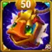 Talismán de la Gran Yema |
Estadística principal |
|---|---|
|
Armadura |
+12000 |
| Ranura 1 | Ranura 2 | Ranura 3 | Bono total de renovación |
|---|---|---|---|
Ataque físico +4400 |
Ataque físico +4400 |
Ataque físico +4400 |
Ataque físico +13200 |
SINERGIAS de Guus – Hero Wars Alliance
SINERGIAS: Senda del Honor
Artemis
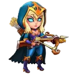
Tras su reciente renovación, Artemis inflige aún más daño crítico. Guus potencia sus capacidades: cuanto mayor sea la salud de sus aliados, más daño inflige.
Galahad
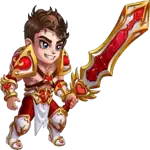
Galahad se beneficia del vampirismo y, con la probabilidad de golpe crítico de su talismán, puede activar los efectos de sinergia de Guus con mayor eficacia.
Ishmael
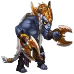
Un guerrero con mucho daño crítico y vampirismo. Guus potencia aún más la supervivencia de Ishmael y la eficacia de sus golpes críticos.
Qing Mao
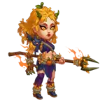
Necesita equipar el Talismán de la Pérdida para obtener probabilidad de golpe crítico, lo que le permite activar la sinergia de Guus e infligir daño de forma más constante.
Tristan

Aunque Tristan no tiene estadísticas de golpe crítico, aporta mucha penetración de armadura y apoya a otros héroes de la Senda del Honor potenciados por Guus.
Otras sinergias con otras facciones
Astrid
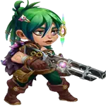
Sinergia: Tiene un talismán que otorga probabilidad de golpe crítico al equiparlo en combate.
Jet
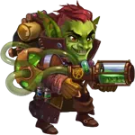
Sinergia: Otorga probabilidad de golpe crítico a todos los aliados.
Sebastian
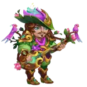
Sinergia: Aumenta el daño crítico de los aliados.
Kayla
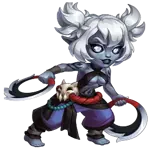
Sinergia: Puede usar un talismán de probabilidad de golpe crítico para activar la sinergia con Guus.
Lara Croft
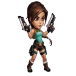
Sinergia: Inflige una gran cantidad de daño crítico.
Jhu
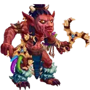
Sinergia: Tiene un alto daño crítico de forma natural.
Oya
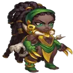
Sinergia: Cura a los aliados cuando infligen daño crítico.
Yasmine
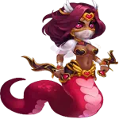
Sinergia: Es uno de los personajes con mayor daño crítico del juego.
Ginger
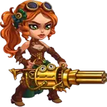
Sinergia: Tiene un talismán que otorga probabilidad de golpe crítico al equiparlo en combate.
Julius
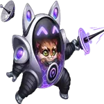
Sinergia: Proporciona escudos y curación y, al activar su artefacto, otorga probabilidad de golpe crítico a los aliados.
Los mejores equipos para Guus en 2026 – Hero Wars: Alliance
Análisis del equipo n.º 1:
Este es uno de los equipos más fuertes de Guus actualmente. Leonel destruye la primera línea y ejerce una presión excepcional contra tanques y defensores con muchos escudos, como Julius. Guus y Byrna aportan varias fuentes de curación, Aidan añade más curación y escudos, y Polaris proporciona daño mágico y control. El equipo puede soportar una gran presión mientras le da a Leonel tiempo suficiente para desmantelar la primera línea enemiga.
| Guus – Mejor equipo de 2026 n.º 1 | ||||
|---|---|---|---|---|
|
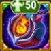 Talismán 2 |
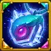 Talismán 2 |
|
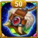 Talismán 1 |
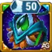 Talismán 1 |
|
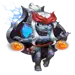 Aidan |
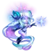 Polaris |
|
|
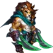 Leonel |
Análisis del equipo n.º 2:
Esta composición sustituye la curación adicional de Byrna y la presión de Leonel sobre los tanques por el daño explosivo de Kayla y los resistentes escudos de Julius. Aidan apoya a Kayla con curación y protección, Guus mantiene viva la formación mientras favorece la presión crítica, y Polaris controla a los enemigos con daño mágico. Julius sostiene la primera línea, formando un equipo equilibrado de daño físico y mágico difícil de derrotar.
⭐ Veredicto final de Alexandre sobre Guus en Hero Wars Alliance
Guus es uno de los apoyos más flexibles para combates prolongados en el meta actual, porque las Plumas doradas combinan curación, presión crítica y protección de emergencia. Puede apoyar tanto a atacantes físicos como mágicos, pero su mayor valor se aprecia en equipos que siguen atacando mientras sus distintos efectos de curación permanecen activos.
Mejor opción general: El equipo n.º 1 con Aidan, Polaris, Guus, Byrna y Leonel. Las tres fuentes de apoyo dan a Leonel el tiempo necesario para derrotar a los tanques, especialmente a las primeras líneas que dependen de escudos, como Julius. Usa el equipo n.º 2 si prefieres el daño explosivo más rápido de Kayla y los escudos de Julius a la curación adicional de Byrna y la especialización de Leonel contra los tanques.
Vídeo recomendado
¡Descubre nuevas habilidades con nuestros héroes destacados!


¡Deja tu opinión!
¿Te ha gustado nuestra guía de Guus para Hero Wars Mobile? ¿Hay algo que no hayas entendido o algún cambio que quieras sugerir? Te invitamos a participar en la sección de comentarios del blog de Alexandre Games. Comparte tu opinión, plantea tus dudas y deja tus sugerencias.
Haz clic en el botón de abajo para empezar: